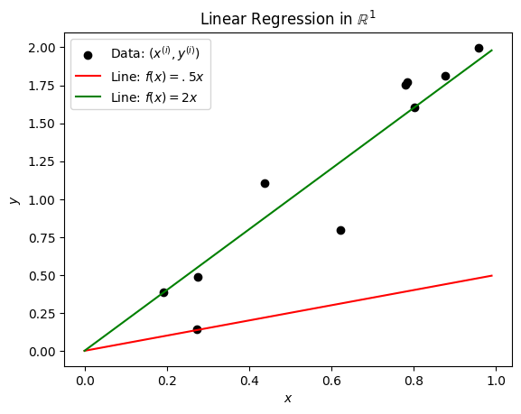
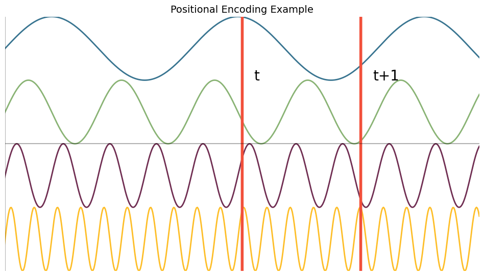

import matplotlib.pyplot as plt
import numpy as np
from mpl_toolkits.mplot3d import Axes3DCode for Producing Images in Lecture Notes
Linear Regression Figures
np.random.seed(1234) # Seed randomness
n = 10 # Number of observations
w = 2 # True parameter
X = np.random.rand(n) # x-values
y = X.dot(w).T + np.random.normal(size=n) * .2 #y-values
plt.scatter(X,y, color='black', label=r'Data: $(x^{(i)}, y^{(i)})$')
plt.xlabel(r'$x$')
plt.ylabel(r'$y$')
xaxis = np.arange(0,1,.01)
plt.plot(xaxis, xaxis*.5, label=r'Line: $f(x) = .5x$', color='red')
plt.plot(xaxis, xaxis*w, label=r'Line: $f(x) = 2x$', color='green')
plt.legend()
plt.title(r'Linear Regression in $\mathbb{R}^1$')
plt.savefig('images/regression_1d.pdf')--------------------------------------------------------------------------- FileNotFoundError Traceback (most recent call last) <ipython-input-2-d86d24ec903a> in <cell line: 16>() 14 plt.legend() 15 plt.title(r'Linear Regression in $\mathbb{R}^1$') ---> 16 plt.savefig('images/regression_1d.pdf') /usr/local/lib/python3.10/dist-packages/matplotlib/pyplot.py in savefig(*args, **kwargs) 1117 # savefig default implementation has no return, so mypy is unhappy 1118 # presumably this is here because subclasses can return? -> 1119 res = fig.savefig(*args, **kwargs) # type: ignore[func-returns-value] 1120 fig.canvas.draw_idle() # Need this if 'transparent=True', to reset colors. 1121 return res /usr/local/lib/python3.10/dist-packages/matplotlib/figure.py in savefig(self, fname, transparent, **kwargs) 3388 for ax in self.axes: 3389 _recursively_make_axes_transparent(stack, ax) -> 3390 self.canvas.print_figure(fname, **kwargs) 3391 3392 def ginput(self, n=1, timeout=30, show_clicks=True, /usr/local/lib/python3.10/dist-packages/matplotlib/backend_bases.py in print_figure(self, filename, dpi, facecolor, edgecolor, orientation, format, bbox_inches, pad_inches, bbox_extra_artists, backend, **kwargs) 2185 # force the figure dpi to 72), so we need to set it again here. 2186 with cbook._setattr_cm(self.figure, dpi=dpi): -> 2187 result = print_method( 2188 filename, 2189 facecolor=facecolor, /usr/local/lib/python3.10/dist-packages/matplotlib/backend_bases.py in <lambda>(*args, **kwargs) 2041 "bbox_inches_restore"} 2042 skip = optional_kws - {*inspect.signature(meth).parameters} -> 2043 print_method = functools.wraps(meth)(lambda *args, **kwargs: meth( 2044 *args, **{k: v for k, v in kwargs.items() if k not in skip})) 2045 else: # Let third-parties do as they see fit. /usr/local/lib/python3.10/dist-packages/matplotlib/backends/backend_pdf.py in print_pdf(self, filename, bbox_inches_restore, metadata) 2798 file = filename._ensure_file() 2799 else: -> 2800 file = PdfFile(filename, metadata=metadata) 2801 try: 2802 file.newPage(width, height) /usr/local/lib/python3.10/dist-packages/matplotlib/backends/backend_pdf.py in __init__(self, filename, metadata) 686 self.original_file_like = None 687 self.tell_base = 0 --> 688 fh, opened = cbook.to_filehandle(filename, "wb", return_opened=True) 689 if not opened: 690 try: /usr/local/lib/python3.10/dist-packages/matplotlib/cbook.py in to_filehandle(fname, flag, return_opened, encoding) 481 fh = bz2.BZ2File(fname, flag) 482 else: --> 483 fh = open(fname, flag, encoding=encoding) 484 opened = True 485 elif hasattr(fname, 'seek'): FileNotFoundError: [Errno 2] No such file or directory: 'images/regression_1d.pdf'

plt.xlabel(r'$z$')
plt.ylabel(r'$\mathcal{L}(z)$')
xaxis = np.arange(-1.5,1.5,.001)
plt.plot(xaxis, xaxis**2, label=r'Squared Loss: $\mathcal{L}(z)=z^2$', color='blue')
plt.plot(xaxis, np.abs(xaxis), label=r'Absolute Loss: $\mathcal{L}(z)=|z|$', color='purple', linestyle='dotted')
plt.legend()
plt.title(r'Squared and Absolute Losses')
plt.savefig('images/regression_losses.pdf')import numpy as np
import matplotlib.pyplot as plt
from matplotlib.lines import Line2D
# Seed randomness
np.random.seed(1234)
n = 10 # Number of observations
w = np.array([2, .5]) # True parameter
X = np.random.rand(n, 2) # x-values
y = X.dot(w).T + np.random.normal(size=n) * .1 # y-values
# Create figure and 3D axis
fig = plt.figure()
ax = fig.add_subplot(111, projection='3d')
# Scatter plot for data points
ax.scatter(X[:, 0], X[:, 1], y, color='black', label=r'Data: $(x_1^{(i)}, x_2^{(i)}, y^{(i)})$')
# Hyperplane 1: Green
x1 = np.arange(0, 1, .01)
x2 = np.arange(0, 1, .01)
X1, X2 = np.meshgrid(x1, x2)
Z = w[0] * X1 + w[1] * X2
ax.plot_surface(X1, X2, Z, alpha=.5, color='green')
# Hyperplane 2: Red
ax.plot_surface(X1, X2, .5 * X1 + 0 * X2, alpha=.5, color='red')
# Labels and title
ax.set_xlabel(r'$x_1$')
ax.set_ylabel(r'$x_2$')
ax.set_zlabel(r'$y$')
ax.set_title(r'Linear Regression in $\mathbb{R}^2$')
# Manually create custom legend handles for the surfaces
handles = [
Line2D([0], [0], marker='o', color='black', markerfacecolor='black', markersize=6, label=r'Data: $(x_1^{(i)}, x_2^{(i)}, y^{(i)})$'),
Line2D([0], [0], color='green', lw=4, label=r'Hyperplane: $f(x) = 2x_1 + .5x_2$'),
Line2D([0], [0], color='red', lw=4, label=r'Hyperplane: $f(x) = .5x_1 + 0x_2$')
]
# Add legend
plt.legend(handles=handles, loc='upper left', framealpha=1)
# Save the figure
plt.savefig('images/regression_2d.pdf', bbox_inches='tight')
plt.show()Logistic Regression Figures
plt.xlabel(r'$z$')
#plt.ylabel(r'$\sigma(z)$')
xaxis = np.arange(-10,10,.001)
sigma = lambda z : 1 / (1+np.exp(-z))
plt.plot(xaxis, sigma(xaxis), label=r'$\sigma(z)$', color='blue')
plt.legend()
plt.title(r'Sigmoid Function')
plt.savefig('images/logistic_sigmoid.pdf')plt.xlabel(r'$z$')
#plt.ylabel(r'$\sigma(z)$')
xaxis = np.arange(-10,10,.001)
sigma = lambda z : 1 / (1+np.exp(-z))
plt.plot(xaxis, sigma(xaxis), label=r'$\sigma(z)$', color='blue')
plt.legend()
plt.title(r'Sigmoid Function')
plt.savefig('images/logistic_sigmoid.pdf')# Create data points
z = np.linspace(0.1, 5, 1000) # Avoid z=0 since ln(0) is undefined
y = -np.log(z)
# Create the figure and axis
plt.figure(figsize=(10, 6))
plt.plot(z, y, 'b-', linewidth=2, label='-ln(z)')
# Add grid
plt.grid(True, linestyle='--', alpha=0.7)
# Add title and labels
plt.title('Graph of -ln(z)', fontsize=14)
plt.xlabel('z', fontsize=12)
plt.ylabel('-ln(z)', fontsize=12)
# Add legend
plt.legend(fontsize=12)
# Add horizontal and vertical axes
plt.axhline(y=0, color='k', linestyle='-', alpha=0.3)
plt.axvline(x=0, color='k', linestyle='-', alpha=0.3)
# Set reasonable axis limits
plt.xlim(0, 5)
plt.ylim(-2, 3)
# Adjust layout
plt.tight_layout()
plt.savefig('images/NegLog.pdf')
# Show plot
plt.show()# Create positional encoding of time example graph
# Create data points
import os
z = np.linspace(-4, 4, 1000)
y1 = np.sin(z*4)+3
y2 = np.sin(z*8)+1
y3 = np.sin(z*16)-1
y4 = np.sin(z*32)-3
y5 = np.sin(z-2)*10000
y6 = np.sin(z-3)*10000
# Create the figure and axis
plt.figure(figsize=(10, 6))
plt.plot(z, y1, linewidth=2, label='months', color="#387490")
plt.plot(z, y2, linewidth=2, label='days', color="#89B374")
plt.plot(z, y3, linewidth=2, label='hours', color="#702E52")
plt.plot(z, y4, linewidth=2, label='minutes', color="#FEBE28")
plt.plot(z, y5, linewidth=4, label="t", color='#F2503B')
plt.plot(z, y6, linewidth=4, label="t+1", color='#F2503B')
# Add grid
plt.grid(True, linestyle='--', alpha=0.7)
# Add title and labels
plt.title('Positional Encoding Example', fontsize=14)
plt.xlabel('Time', fontsize=12)
#annotate t values
plt.annotate("t", (2.1, 2), fontsize=20)
plt.annotate("t+1", (3.1, 2), fontsize=20)
# Add horizontal and vertical axes
plt.axhline(y=0, color='k', linestyle='-', alpha=0.3)
plt.axvline(x=0, color='k', linestyle='-', alpha=0.3)
# Set reasonable axis limits
plt.xlim(0, 4)
plt.ylim(-4, 4)
plt.xticks(None)
# Adjust layout
plt.tight_layout()
plt.axis('off')
plt.savefig('images/PositionalEncodingOfTime.pdf')
# Show plot
plt.show()/content